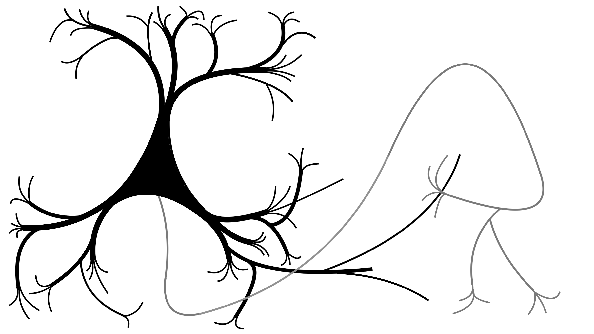

Neurons is an R/C++ package for simulating neurons and networks of neurons, currently under development at Oviedo Lab. The package is built around a few core object classes, all of which are a C++ class accessible through R via Rcpp modules and wrappers.
- neuron: For modeling the spiking of single neurons with dichotomized Gaussians.
- network: For simulating spiking neural networks with Growth-transform dynamical systems.
- motif: For specifying general patterns of connectivity between neurons in a circuit, i.e., a “circuit motif” or “network topology”.

Copyright (C) 2025, Michael Barkasi barkasi@wustl.edu